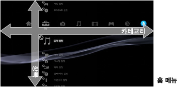
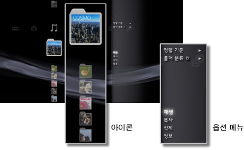
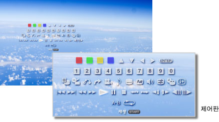

XMB™에 대하여 > XMB™(크로스 미디어 바)에 대하여
XMB™(크로스 미디어 바)에 대하여
XMB™ 사용하기
PS3™에는 XMB™(크로스 미디어 바)라는 유저 인터페이스가 탑재되어 있습니다. 가로 행에는 기능이 카테고리로 표시되고 세로 열에는 각 카테고리에서 수행할 수 있는 항목이 표시됩니다.

| 방향키 | 카테고리/항목을 선택합니다. |
|---|---|
 버튼 버튼 |
선택한 항목을 결정합니다. |
 버튼 버튼 |
조작을 취소합니다. |
 버튼 버튼 |
옵션 메뉴/제어판을 표시합니다. |
| PS 버튼 | XMB™를 표시합니다. |
콘텐츠 재생하기
재생하려는 디스크나 기록 미디어의 콘텐츠를 선택한 다음 버튼을 누릅니다. 재생을 중지하려면 버튼을 누릅니다.
알아두기
사용하시는 PS3™에 따라서는 기록 미디어를 사용하기 위해 별매의 USB 어댑터가 필요한 경우가 있습니다.
인포메이션 패널
XMB™ 화면 오른쪽 위의 인포메이션 패널에서는 온라인 상태인 친구나 메시지 수신 상황, What' New의 최신 정보 등을 확인할 수 있습니다.

(1) |
아바타* |
|---|---|
(2) |
온라인 상태인 친구의 수* |
(3) |
새로운 텍스트 대화 정보* |
(4) |
메시지 수신 상황 |
(5) |
날짜와 시각 |
(6) |
로딩 아이콘 |
(7) |
[What's New]의 정보 |
* PSNSM에 로그인되어 있을 때만 표시됩니다.
옵션 메뉴 사용하기
아이콘을 선택한 다음 버튼을 눌러 옵션 메뉴를 표시합니다. 버튼을 눌러 옵션 메뉴를 표시하거나 숨길 수 있습니다.

옵션 메뉴 항목
옵션 메뉴 항목은 카테고리에 따라 다릅니다.
| 재생/시작/표시 | 콘텐츠를 재생합니다. |
|---|---|
| 디스크 꺼내기 | 디스크를 꺼냅니다. |
| 삭제 | 콘텐츠를 삭제합니다. |
| 복사 | 콘텐츠를 본체 스토리지나 기록 미디어에 복사합니다.*1 |
| 정보 | 콘텐츠에 대한 정보를 표시합니다. 이름과 같은 일부 정보를 변경할 수 있습니다. |
| 재생 목록에 추가 | 콘텐츠를 재생 목록에 추가합니다. |
| 모두 표시 | 기록 미디어 또는 USB 대용량 저장소 장치에 저장된 모든 폴더를 표시합니다.*1 |
| 정렬 기준 | 이름, 날짜 등으로 콘텐츠 정렬 기준을 바꿉니다. |
| 폴더 분류 | 앨범별이나 파일 형식별 등으로 분류 방법을 변경합니다.*2 |
| 선택 삭제 | 삭제할 콘텐츠를 선택하여 한번에 모두 삭제합니다. |
| 선택 복사 | 복사하려는 콘텐츠를 선택하여 한번에 모두 복사합니다. |
| *1 |
사용하시는 PS3™에 따라서는 기록 미디어를 사용하기 위해 별매의 USB 어댑터가 필요한 경우가 있습니다. |
|---|---|
| *2 |
분류에 필요한 정보가 없는 콘텐츠는 ［미설정］ 폴더로 분류됩니다. 또한 콘텐츠에 따라서는 분류되지 않는 것이 있습니다. |
제어판 사용하기
콘텐츠 재생중에 버튼을 누르면 제어판이 표시됩니다. 버튼을 눌러 제어판을 표시하거나 숨길 수 있습니다. 재생 중인 콘텐츠에 따라 제어판 항목이 다릅니다.

여러 기능을 동시에 사용하기
PS3™에서는 여러 기능을 동시에 즐길 수 있습니다. 예를 들어  (음악)에서 음악을 재생하면서
(음악)에서 음악을 재생하면서  (사진)에서 이미지를 보거나
(사진)에서 이미지를 보거나  (네트워크)에서 인터넷에 액세스할 수 있습니다.
(네트워크)에서 인터넷에 액세스할 수 있습니다.
예: (음악)에서 음악을 재생하면서 (사진)에서 이미지 보기
1. |
|
|---|---|
2. |
PS 버튼을 누릅니다. |
3. |
|
알아두기
- Super Audio CD 재생중 또는
 (설정) >
(설정) >  (음악 설정) > [출력 주파수]가 [44.1/88.2/176.4 kHz]로 설정된 경우 (음악) 콘텐츠를 다른 기능과 함께 즐기실 수 없습니다.
(음악 설정) > [출력 주파수]가 [44.1/88.2/176.4 kHz]로 설정된 경우 (음악) 콘텐츠를 다른 기능과 함께 즐기실 수 없습니다. - 재생되는 콘텐츠의 종류에 따라서는 동시에 여러 기능을 사용할 수 없는 것이 있습니다.
중요
Super Audio CD는 일부 PS3™에서는 재생할 수 없습니다. 상세한 사항은 [재생할 수 있는 디스크의 종류에 대하여]를 참조해 주십시오.